repo2docker is a utility maintained by Project Jupyter that creates stable Docker images based on standard configuration files. It is suitable for Python, R, Python and R together, and Julia environments, and can also install Linux packages if needed.
In this tutorial, you will: 1. Use cookiecutter to set up a repository that is ready to use for your DIWA VRE-compatible reproducible workflow 2. Use the repo2docker GitHub Action to build a reproducible image 3. Upload the image to DockerHub, and 4. Start up a container with your environment on the DIWA VRE
The following diagram shows the different tools you will be using and how they relate to each other.
You should receive an email with instructions on verifying your account. Once you finish, you can navigate to the DockerHub homepage if you are not there already.
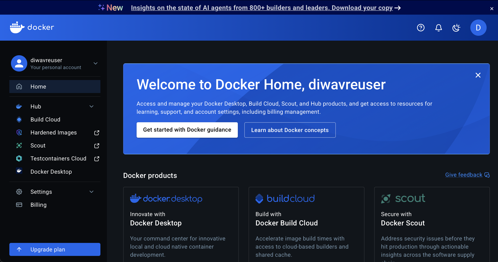
Build your environment
Start out with our cookiecutter
We have prepared a template repository, and you can fill in your details using the cookiecutter utility.
Open a cookiecutter image on the DIWA VRE
Start by logging into the DIWA VRE. From the home page, select Custom Image, paste eculler/diwa_repo_cookiecutter into the image field, and click Launch
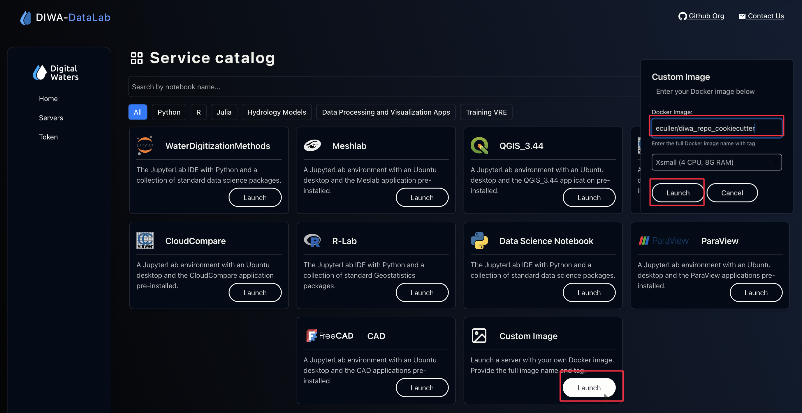
Open a cookiecutter image on the DIWA VRE
Run the cookiecutter command in the Terminal
Open a Terminal tab, and run the following command, and respond to the prompts with information about your project:
Make sure that when you are linking your repository on the VRE to the remote origin on GitHub that you select SSH authentication!!!
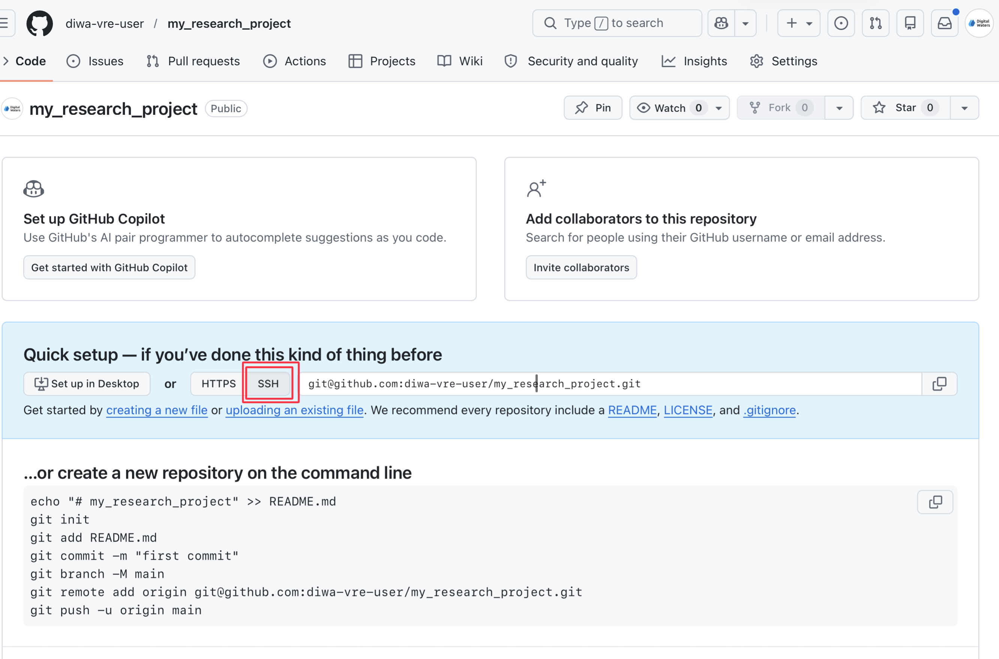
Select SSH authentication when linking to the remote origin.
You should now be able to see your project on GitHub:
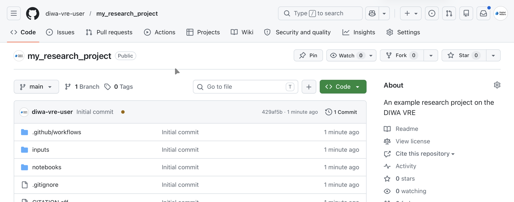
View your new repository on GitHub.
Give GitHub Actions access to push to DockerHub
Images are a launchable record of all the setup steps needed for code to run. This is an important part of reproducibility, because it is difficult for someone else to create a computing environment that exactly meets the needs of your workflow. DockerHub lets you share images just like GitHub lets you share code, and GitHub Actions is useful for building images. All you need is to be able to upload your image once it is complete!
Create a Personal access token on DockerHub
Go to DockerHub account settings
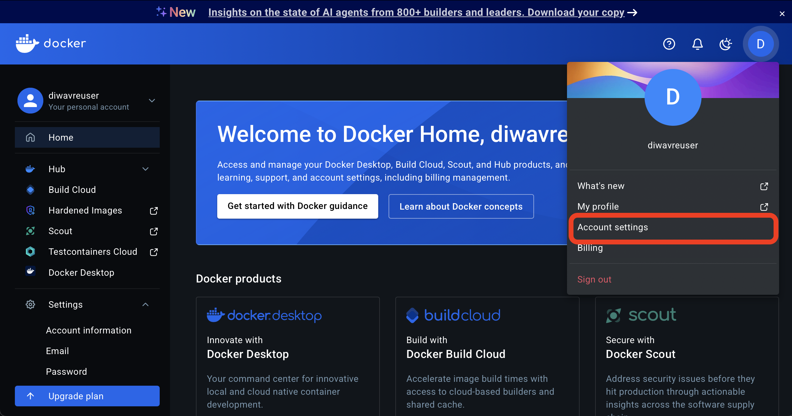
Select Personal access tokens
You may need to scroll down in the menu on the left.
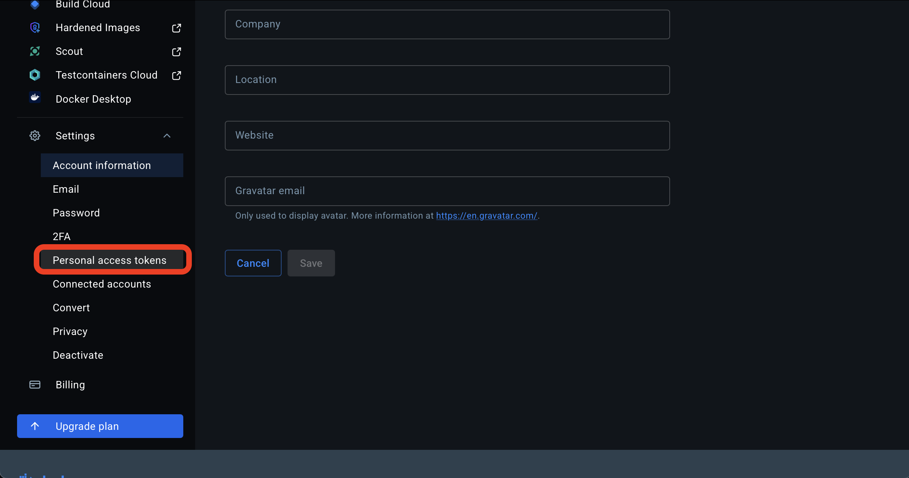
Select Personal access tokens
Select Generate new token
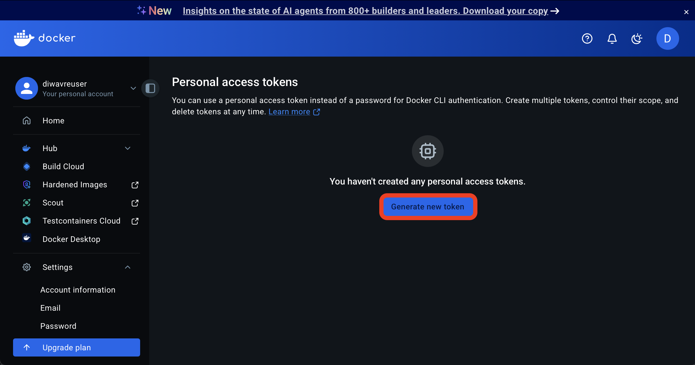
Add a description, click Generate token, select Read and Write permissions, and copy it
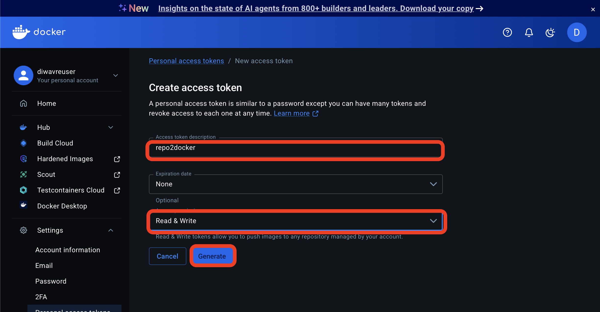
Make sure to copy!
Add the PAT to GitHub
Return to your GitHub repository
Next, navigate to the repository you are working on in GitHub. You can create a DIWA VRE and repo2docker-compatible repository using our cookiecutter.
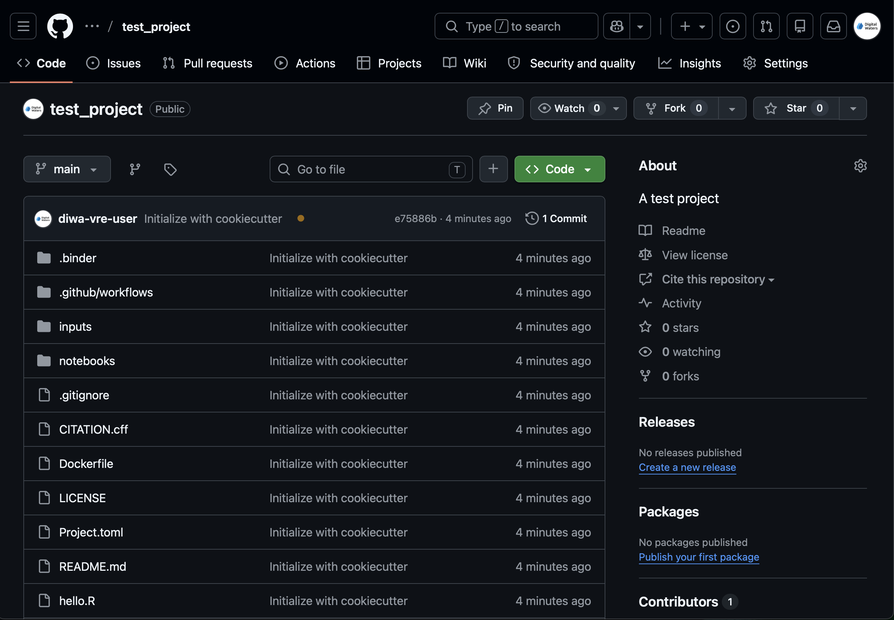
Return to your GitHub repository
Navigate to Settings
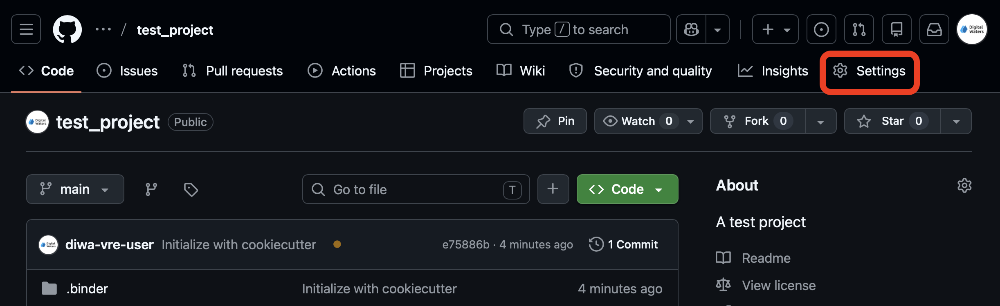
Navigate to Settings
Select Actions Secrets
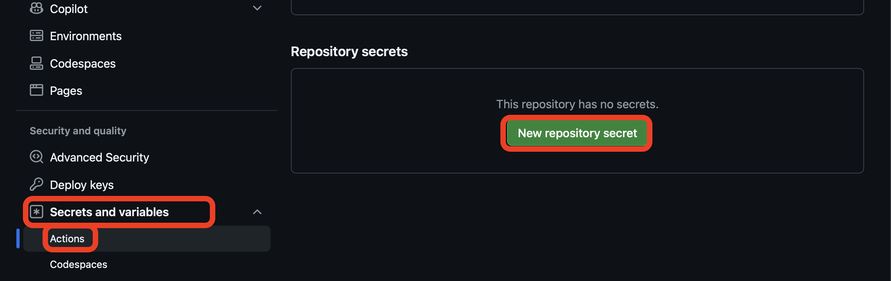
Select Actions Secrets
Add your DockerHub credentials as repository secrets
The secrets must be named EXACTLY DOCKER_USERNAME and DOCKER_PASSWORD. However, the values of the secrets should not match what you see here – they should be your docker username and PAT.
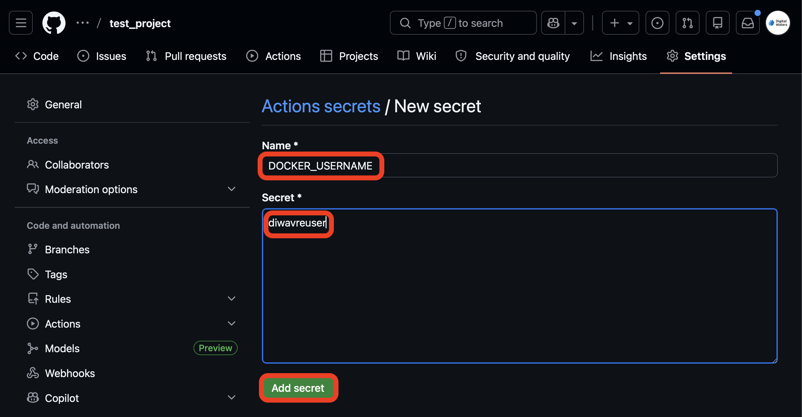
Add your DockerHub username s as a repository secret named DOCKER_USERNAME
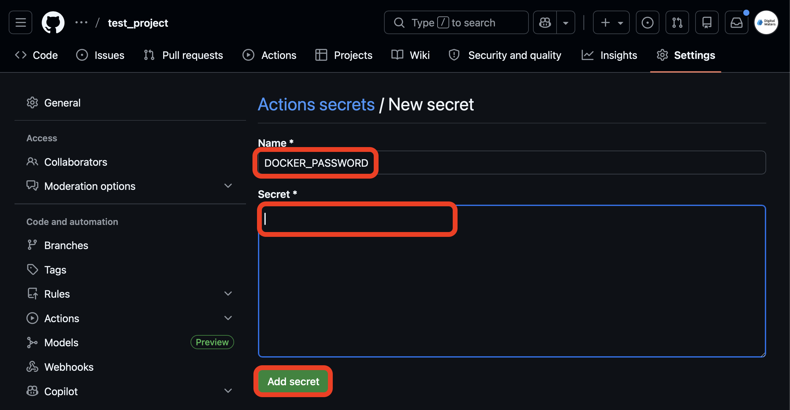
Add your DockerHub token as a repository secret named DOCKER_PASSWORD
Once you have added the secrets make sure you check that the names are correct! Otherwise GitHub Actions will not be able to find the values you saved.
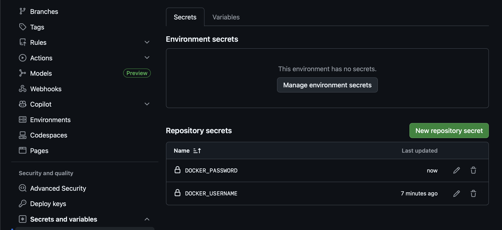
Check the names!
Configure your environment
The next step is to make sure that you have put all your configuration files into your repository. That means environment.yml (conda) or requirements.txt (pip) for Python libraries, and install.R for R libraries. If you want to use R and Python together, you will also need a runtime.txt file with the version and date of R that you want to use. You can check out the repo2docker documentation for more information on other types of configurations.
When you use cookiecutter, you should have examples of common configuration files already in your repository. However, you will need to customize them with the particular packages or libraries that you are using. Extra configuration files or packages will cause the build to take longer, so make sure you remove anything you don’t need!
At this point, if you already have code elements, you should move them into the notebooks folder of this repository.
Go to the Actions tab on GitHub
You may need to enable Actions depending on how you created your repository.
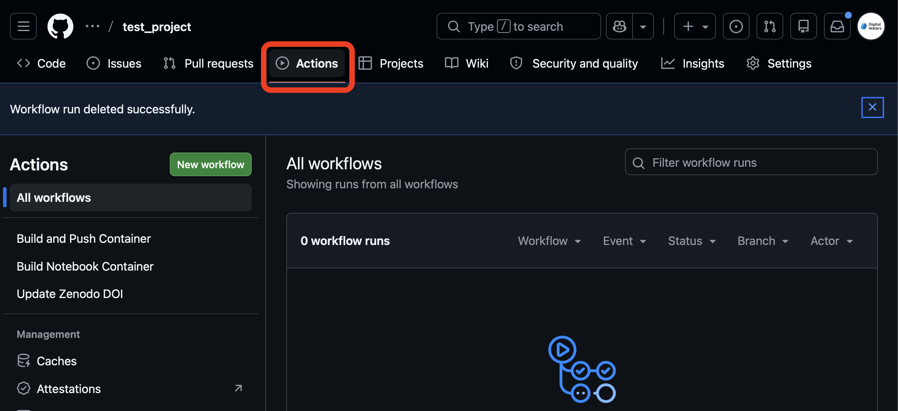
Go to the Actions tab on GitHub
Select the Build and Push Container workflow and run it.
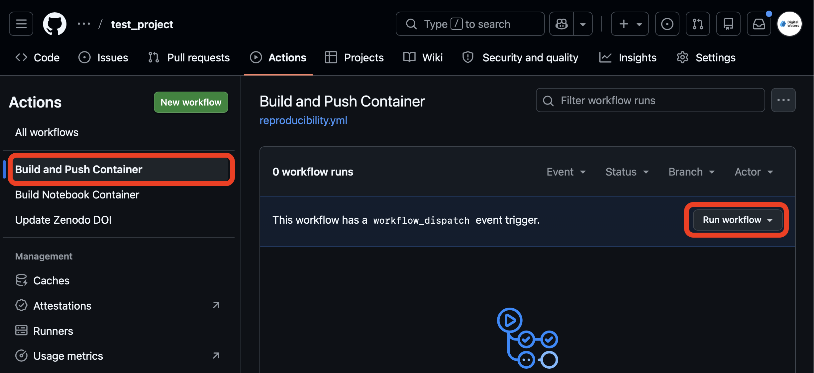
Select the Build and Push Container workflow and run it.
Try your environment on the VRE
You now have all the ingredients to run your workflow reproducibly on the DIWA VRE! First, you need to get the name of your image from DockerHub.
Navigate to your repository page on DockerHub
Making sure that you are logged in, head to the repository page on DockerHub. Once there, identify the repository in DockerHub with the same name as your GitHub repository and click on the page.
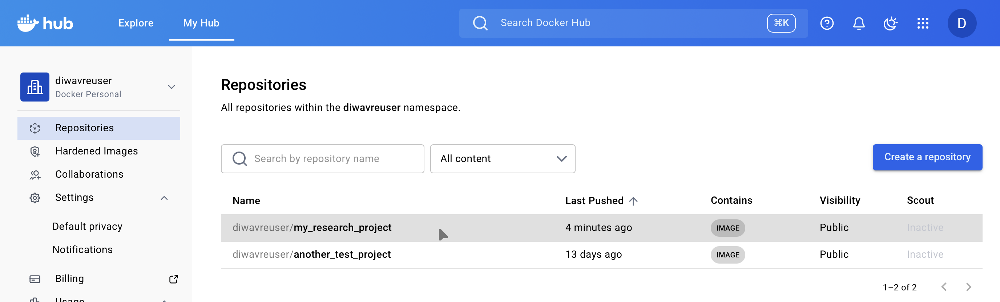
Select the repository for this project on DockerHub.
Select the most recent tag
If you are actively developing your image configuration, it is important NOT to use the “latest” tag from DockerHub! If you do this and then make changes, your changes will not show up on the VRE. Instead, select the most recent tag that is not “latest”. This will be the same as “latest”, but you will not have the same caching problem.
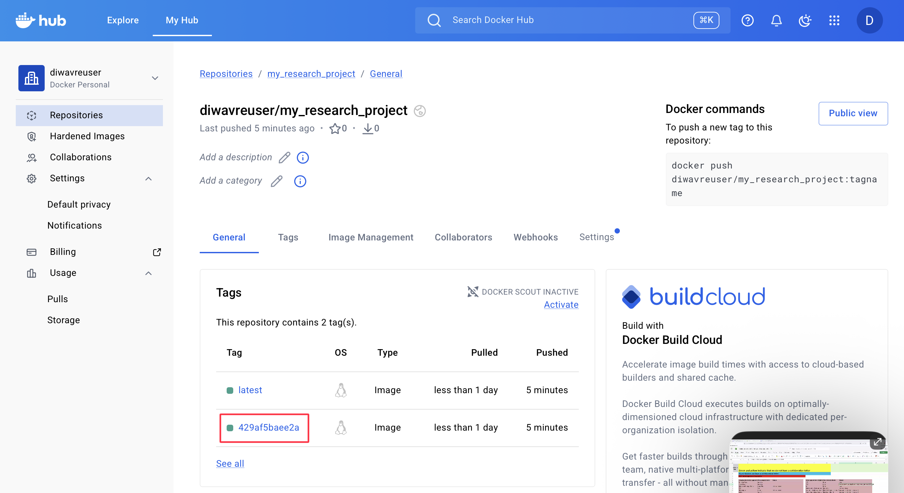
Select the most recent tag that is not latest.
Copy the name of your DockerHub repository with tag
From this page, copy the name of the repository including the tag. It should look something like yourusername/your_project_slug:tag14arg8704.
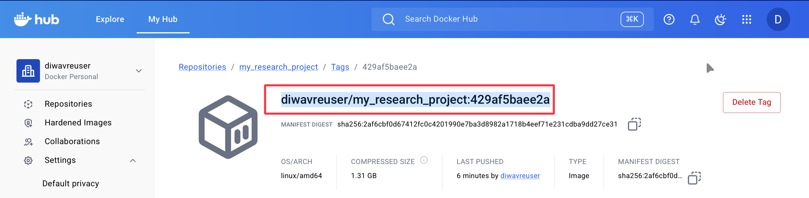
Copy the name of your DockerHub repository with tag.
Start your custom image on the DIWA VRE
Shut down your server if it is still running. Then, start another custom image, this time using the repository and tag name you copied from DockerHub.
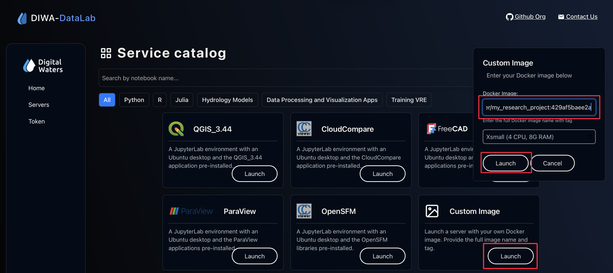
Start your custom image on the DIWA VRE.
Run your workflow!
All the packages and software you need should now be installed. If they are not, check your configuration files and make sure you are not using a cached Docker image.